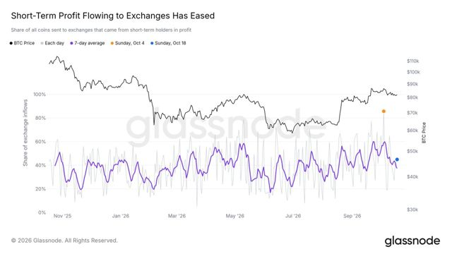
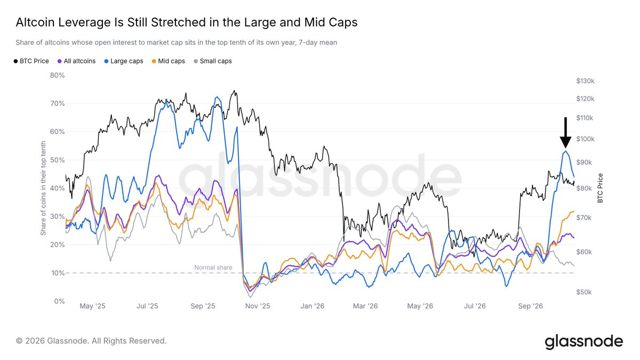
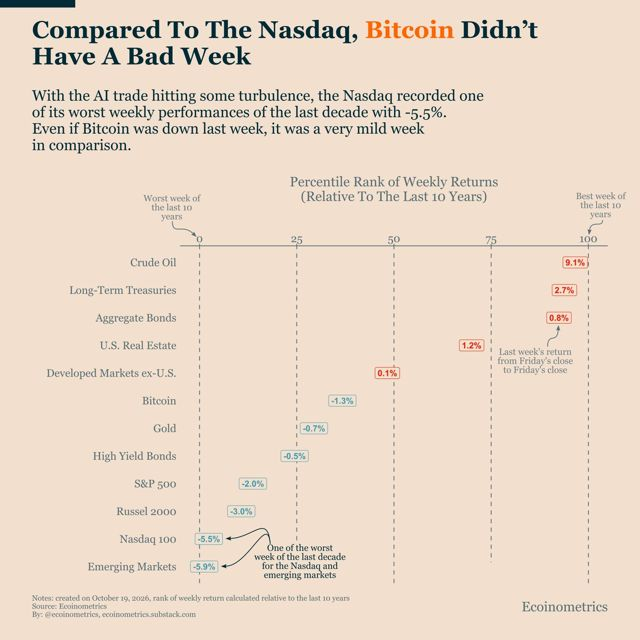
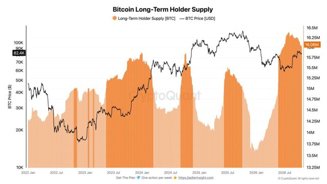
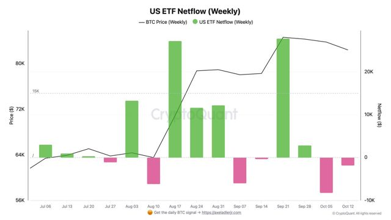

Cautious — October hike scare fades, but BTC can't join the tech bounce while leverage rebuilds and ETF money keeps leaving.
Base case is a range ($80–86k) at 55%; downside slightly more likely than upside (30% vs 15%). 7D: Bear 35→30, Base 50→55 — Monday's ~65% October-hike quote proved an outlier (major CME-citing reads ~16–20%), and the ~$80.6k weekend low held. Bull stays 15: BTC lagged the tech bounce, leverage is rebuilding without price follow-through and ETF flows are still negative. 1M held at 45/15/40: a December hike is ~92% priced and the Oct 27–28 FOMC remains the swing event.
Cautious: caution signals outnumber supports (6 vs 3).
Tracked BTC closely this week. Concentrated in SOL (95%) with a small BTC anchor.
Cycle still Bearish at 32 with 4/16 bullish — still 32 Bearish / narrow breadth on the Oct 15 page, but 30d momentum broadened further vs Oct 8 (rising 11→15, none falling). BlockHorizon carried from Oct 15 read — no live read Oct 20. Partly confirmed: 2 agree, 2 diverge on overlaps — spot levels look healthier than BH's Bearish cycle scores; MoM momentum is broadening. CheckOnChain levels as of 2026-10-19.
Structure neutral: no clear weekly trend — range-bound. Futures OI +2.6% WoW: rally fuelled by new leverage — squeeze risk rises.
| Lens | Signal | What it means |
|---|---|---|
| Liquidity | 🟡 Mixed | Fed ↑ improving (Wed 10-14 print) · Treasury cash rebuilding — no clear push. |
| Flows | 🔴 Outflows | ETFs −$228M last week · stablecoins edging down. |
| Spot vs leverage | 🟡 Leverage building | Futures OI +2.6% WoW: rally fuelled by new leverage — squeeze risk rises. |
| Macro | 🟢 Tailwind | Dollar and yields eased this week — looser conditions; equities flat. |
| On-chain | 🔴 Bearish cycle | Cycle 32 · Bearish · breadth 4/16 weak. On-chain cycle not yet supportive; 30d momentum turning up (15/16 rising). |
| 7-day outlook | 🟡 Downside skew | Base case most likely (55%); bear 30% vs bull 15%. |
| Dimension | Signal | What it means |
|---|---|---|
| Liquidity | 🟢 Improving, marginally (Wed 10-14 print) | Net Fed liquidity rising — tailwind for risk assets. |
| Liquidity momentum | 🟢 Turning up (slow, at risk) | Liquidity impulse turning up — needs a second weekly print to confirm. |
| Risk appetite | 🟡 Mixed — tech bounced, crypto didn't | Worth watching. |
| Crypto trend | 🟡 Neutral — range, lower half | No clear weekly trend — range-bound. |
| Crypto positioning | 🟡 Leveraged Rally — longs crowding in | Leverage-driven — more fragile. |
| Leverage | 🟡 Rebuilding, funding rising | Leverage building — squeeze risk rising. |
| ETF demand | 🔴 Outflows, slowing | Institutions selling — removes a key source of demand. |
| USD pressure | 🟡 Mixed — softer WoW, firmer MoM; October hike odds lower (Estimated) | Dollar pressure mixed. |
| On-chain cycle | 🔴 32 Bearish · 4/16 (BlockHorizon · Oct 15, carried) | Headwind for risk assets. |
| RSDH | 🟢 BULL · SOL95/BTC5 | Supportive for risk assets. |
| Indicator | Level | WoW | MoM | Signal |
|---|---|---|---|---|
| BTC | $81,490 | -1.92% | +0.44% | ⚪ Range-bound |
| ETH | $2,393.49 | -4.12% | -9.43% | 🔴 Downtrend |
| DXY | 101.94 | -0.59% | +1.72% | 🟢 Easing — tailwind |
| U.S. 10Y | 5.14% | -5 bp | +14 bp | 🟢 Yields falling — tailwind |
| S&P 500 | 7,691 | -0.36% | +0.53% | ⚪ Range-bound |
| Nasdaq | 26,431 | -0.98% | -0.35% | ⚪ Range-bound |
| VIX | 18.4 | +9.31% | +24.51% | 🟡 Alert |
WoW = 7 days (crypto) / 5 sessions (markets) · MoM = 1 month.

Short-term holders taking profit sent the biggest share of exchange inflows in a year and weighed on price, but that flow has now cooled back to its yearly average.

Altcoin leverage is still elevated: over 40% of large caps sit near their highest leverage of the year despite lower prices, so a deeper drop would put many longs at risk.

The Nasdaq 100 fell 5.5% in its worst week in a decade, yet Bitcoin held around $82K above its 200-day average, roughly where ETF demand says it should trade.

Long-term holders have trimmed 345K BTC since late July; they were selling almost daily in early October, but the pace has slowed.

Spot Bitcoin ETFs saw a slightly negative week, and a little over 10,000 BTC has left them over the last two weeks, a sign ETF demand has slowed.
Curated data-first analysts only · paraphrased, not advice